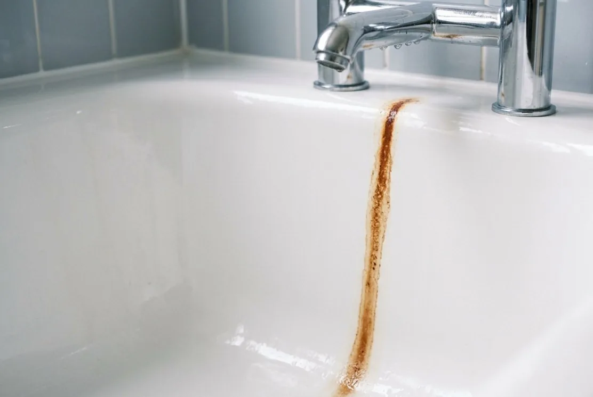

Аэрация
Контакт воды с воздухом помогает перевести часть растворённых соединений в фильтруемую форму.
Где метод не сработает
Эффективность зависит от pH, концентрации, времени контакта, сопутствующих примесей и выбранной схемы.
Растворённое, окисленное и связанное с органикой железо ведут себя по-разному. Поэтому одной надписи «обезжелезиватель» недостаточно.

Для выбора метода важны не только миллиграммы железа, но и pH, окисляемость, марганец, мутность, запах и режим расхода.
| Наблюдение | Возможные причины | Проверка |
|---|---|---|
| Прозрачная вода желтеет после отстаивания | Растворённое железо | Общее и растворённое железо, pH, окисляемость |
| Рыжие хлопья идут сразу | Окисленное железо или ржавчина из труб | Железо, мутность, точка отбора, состояние труб |
| Металлический привкус без цвета | Железо или другие факторы | Анализ, а не оценка только по вкусу |
Найдите строки общего железа, кислотности и окисляемости: без них форму железа не определить, а от неё зависит вся дальнейшая схема.
Подход выбирают по форме железа и по соседним показателям, а не по тому, что стоит у соседа за забором.
Контакт воды с воздухом помогает перевести часть растворённых соединений в фильтруемую форму.
Эффективность зависит от pH, концентрации, времени контакта, сопутствующих примесей и выбранной схемы.
Материал задерживает окисленные соединения или участвует в каталитическом процессе.
Загрузка подбирается по анализу; неправильный режим промывки быстро ухудшает работу.
Используется, когда одновременно подтверждены железо, жёсткость, марганец или органика.
Компактность не означает универсальность: есть пределы концентраций и расхода.
Обезжелезивание почти всегда занимает больше места, чем ожидает хозяин дома: кроме самого баллона нужен запас по высоте на замену загрузки и подход к клапану для обслуживания. Если по анализу требуется аэрация, к схеме добавляется ещё один корпус, а безнапорный вариант вдобавок требует места под ёмкость и насос второго подъёма. Заранее стоит измерить свободную площадь у ввода, высоту потолка в самой низкой точке помещения, ширину дверного проёма для заноса оборудования и расстояние до слива.
Обезжелезиватель периодически промывает загрузку и сбрасывает воду с задержанными соединениями железа залпом, а не тонкой струйкой. Для септика с биологической ступенью это чувствительно: разовый объём и характер стока способны нарушить работу камеры, поэтому промывку чаще уводят в отдельный дренажный колодец, накопитель или согласованный сброс мимо септика. Важны диаметр и уклон линии, разрыв струи перед приёмником и защита от промерзания.
Как источник влияет на анализ и исходные данные.
ОткрытьКатегории оборудования и пределы применимости.
ОткрытьНапорные и безнапорные схемы.
ОткрытьКоличество ступеней должно объясняться строками протокола, а не ассортиментом продавца. Попросите показать, какой показатель закрывает каждый корпус и что произойдёт, если его убрать – на нормальный вопрос есть нормальный ответ. Если объяснения нет, это повод сравнить предложение с другим подрядчиком.
Фильтр под мойкой очищает воду в одной точке – на кухне. Ванна, бойлер и стиральная машина получают воду прямо с ввода, поэтому потёки и налёт там никуда не денутся. Задачу всего дома решает оборудование на вводе, а кухонная ступень остаётся для питьевой линии.
Такое поведение действительно часто связано с растворённым железом, которое окисляется от контакта с воздухом. Но это гипотеза, а не диагноз: подтверждают её общее и растворённое железо, pH и окисляемость в протоколе. От формы железа напрямую зависит метод, поэтому анализ здесь скорее экономит деньги, чем тратит их.
Считать нужно воду на промывки, электричество для клапана и компрессора, периодическую замену загрузки и сервисные выезды. У реагентных схем добавляется расход реагента. Сумма заметно зависит от концентрации железа и расхода воды в доме, поэтому её считают под конкретную схему, а не берут усреднённой.
Обезжелезиватель решает свою задачу и не отвечает за остальные показатели, включая микробиологию. Пригодность воды для питья подтверждают анализом уже после системы, а не фактом установки. Для кухни часто оставляют отдельную питьевую ступень – это разные линии и разные критерии.
Ответим, что проверить и сколько это будет стоить.